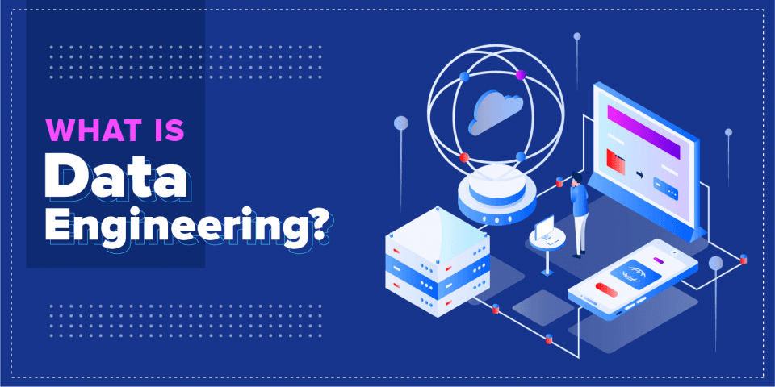

Data Sources
User input data can be text, images, videos, uploaded files, etc. It requires more heavy-duty checking and processing. User input data tends to require fast processing as well.
System-generated data is the data generated by different components of your systems which includes various types of logs and system output such as model predictions. The logs of data provide visibility into system performance which can be used for debugging and potentially improving the application.
Data Formats
The process of converting a data structure or object state into a format that can be stored or transmitted and reconstructed later is data serialization.
JSON
JSON, JavaScript Object Notation was derived from JavaScript but it’s language-independent. It’s key-value pair paradigm is simple but powerful, capable of handling data of different levels of structuredness.
Row-Major Versus Column-Major Format
CSV (Comma-separated values) is row-major, which means consecutive elements in a row are stored next to each other in memory. Parquet is column-major, which means consecutive elements in a column are sotred next to each other. Row-major formats are better when you have to do a lot of writes, whereas column-major ones are better when you have to do a lot of column-based reads.
Text Versus Binary Format
CSV and JSON are text files, whereas Parquet files are binary files. Text files are files that are in plain text, which means they are human-readable. Binary files are nontext files and contains onlys 0s and 1s. Binary Files are more compact.
AWS recommends using the Parquet format because the Parquet format is up to 2x faster to unload and consumes up to 6x less storage in Amazon s3, compared to text formats.
Data Models
Data models describe how data is represented. The attributes of the entities present in the model make up a data model.
Relational Model
Relational model was invented by Edgar F. Codd in 1970. In this model, data is organized into relations; each relation is a set of tuples. A table is an accepted visual representation of the relation, and each row of a table makes up a tuple.
Document Model
The document model targets use cases where data comes in self-contained documents and relationships between one document and another are rare. The document model is built from around the concepts of “document” which is often a single continuous string encoded as JSON, XML, or a binary format like BSON (Binary JSON).
Graph Model
The graph model goes in the opposite direction of targeting use cases where relationships between data items are common and important. The graph model is built around the concepts of “graph” which consists of nodes and edges, where the edges represent the relationships between the nodes. A database that uses graph structures to store its data is caled a graph database.
Structured Versus Unstructured Data
Structured data follows a predefined data model, also known as a data schema which makes your data easier to analyze. Unstructured data doesn’t adhere to a predefined data schema. Even though unstructured data doesn’t adhere to a schema, it might still contain intrinsic patterns that help you extract structures.
A repository for storing structured data is called a data warehouse. A repository for storing unstructured data is called a data lake. Data lakes are usually used to store raw data before processing. Data warehouses are used to store data that has been processed into formats ready to be used.
ETL: Extract, Transform, and Load
When data is extracted from different sources, it’s first transformed into the desired format before being loaded into the target destination such as a database or a data warehouse. This process is called ETL, which stands for Extract, Transform, and Load.
Extract is extracting the data from all data sources. In extraction phase, we need to validate the data and reject the data that doesn’t meet our requirements. Transform is the meaty part of the process, where most of the data processing is done. We can apply operations such as transposing, deduplicating, sorting, aggregating, deriving new features, and more data validation. Load is deciding how and how often to load the transformed data into the target destination, which can be a file, a database, or a data warehouse.
Batch Processing Versus Stream Processing
When data is processed in batch jobs, we refer to it as batch processing. When we have data in real-time transports like Apache Kafka and Amazon Kinesis, we say that we have streaming data and stream processing refers to doing computation on streaming data.
Stream processing, when done right, can give low latency because we can process data as soon as data is generated, without having to first write it into databases. Stream processing is used to compute features that change quickly and it is more difficult because the data amount is unbounded and the data comes in at variable rates and speeds.